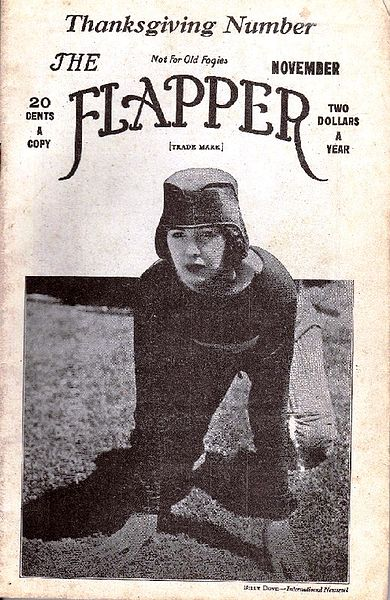

Wednesday, January the 30th, 2013
back to: title, date or indexes
The diary of a flapper, this day in 1922:
Went out flapping, wearing my cloche hat, a straight loose dress, and unbuckled galoshes. Thrilled to the hot new jazz sounds at the Hot New Jazz Sounds Club, smoked lots of cigarettes, with a long cigarette holder, drank cocktails, and then drove an automobile at high speed through the city streets while laughing my head off.
One day, far in the future, I will be a toothless crone, slumped in an armchair surrounded by knitting and cats. But even then I shall not buckle my galoshes, and I will always be able to look back and remember how I flapped, oh! how I flapped!

Hooting Yard on the Air, March the 19th, 2015 : “Hiking Pickle Revisited” (starts around 23:05)